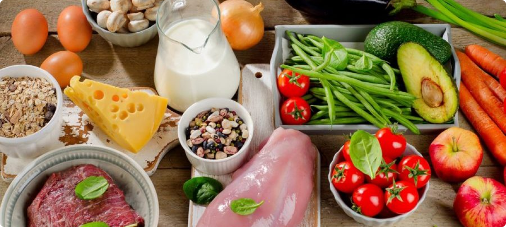
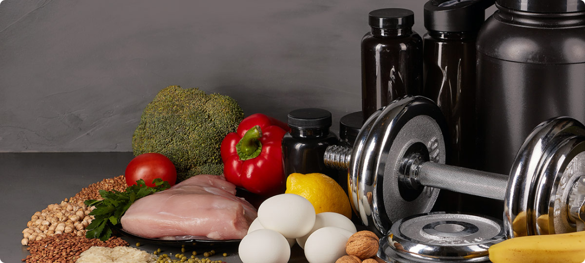

Рекомендации
- Рекомендации по набору мышц
- Значение воды и правильного питания для атлета
- Суточная норма калорий
- Суточная норма белка
- Суточная норма жиров
- Суточная норма углеводов
- Что нельзя есть при наборе мышечной массы
Рекомендации по набору мышц
При наборе мышечной массы важно не допустить стремительного увеличения жировой прослойки и доминирующего разрушения белка. Для этого следуйте базовым правилам и вносите изменения не только в рацион, но и в тренировочный процесс.
Еще одно обязательное условие – здоровый сон и правильное чередование интенсивных нагрузок с отдыхом. Нельзя спать меньше 8 часов в сутки. Помните, что набор мышечной массы происходит не во время тренировок, а в период отдыха. Особое внимание здесь стоит обращать на растягивание мышц. Если вы мало спите, то их рост может не сопровождаться увеличением объема. Не забывайте также менять тренировочный процесс, чтобы избегать привыкания организма к нагрузкам и ограждать себя от стресса, который повышает уровень кортизола.
Значение воды и правильного питания для атлета
Правильное питание для набора массы – залог качественного восстановления и скорейшего достижения результатов. И наоборот, ошибки при формировании рациона не дают атлету прийти к цели. Если вы правильно питаетесь, то мышцы будут расти быстрее, тело всегда будет находиться в тонусе. Вы также сможете увеличивать нагрузки и организовывать разнообразный тренировочный процесс со сменой планов.
Другие преимущества правильного питания:
- рост силовых показателей;
- повышение выносливости и работоспособности;
- мощный заряд энергии;
- оптимизация образования жировой ткани;
- нормализация уровня гликогена в мышцах.
СУТОЧНАЯ НОРМА КАЛОРИЙ
| вес | Суточная калорийность, мужчины | Суточная калорийность, женщин |
|---|---|---|
| 50кг | 2100 | 1860 |
| 55кг | 2310 | 2046 |
| 60кг | 2520 | 2232 |
| 65кг | 2730 | 2418 |
| 70кг | 2940 | 2604 |
| 75кг | 3150 | 2790 |
| 80кг | 3360 | 2976 |
| 85кг | 3570 | 3162 |
| 90кг | 3780 | 3348 |
| 95кг | 3990 | 3534 |
Суточная норма белка
Белок – главный материал для строительства мышц. Поэтому питание для набора массы основывается именно на нем. При регулярных силовых тренировках важно потреблять до 2 г белка на каждый килограмм веса. Но каждую ситуацию стоит рассматривать индивидуально. Нередки случаи, когда оптимальным будет потребление 2.5 г белка на каждый килограмм веса и даже его увеличение до 3 г. Однако повышать его долю в рационе стоит только в ситуациях, когда набора массы не происходит и все прочие факторы вы исключили. ТОП-5 продуктов с самым высоким содержанием белка на 100 г:
- Сыр – до 29 г.
- Куриная грудка – до 26.8 г.
- Арахис – 26.3 г.
- Чечевица – 24.8 г.
- Тунец – 22.7 г.
Важно: не стоит безмерно увеличивать долю белка в рационе, это может привести к нарушению функций внутренних органов и центральной нервной системы, а также привести к серьезным проблемам с пищеварением. Старайтесь также разделить потребление белка на 4 приема пищи, чтобы дать мышцам подпитку в течение всего дня.
Суточная норма жиров
Здесь особенно важно обратить внимание на качество, а не на количество, а также на правильное употребление. Питание для набора массы для мужчин обязательно должно включать в себя триглицериды, так как они влияют на выработку тестостерона. Женщинам тоже не стоит минимизировать их. При этом важно подбирать правильные продукты. Жиры могут быть:
- мононенасыщенными и полиненасыщенными – то, что нам нужно;
- насыщенными – они нам не нужны.
Включите в рацион курицу, оливки, арахис и авокадо. В них много Омега-9 жирных кислот, которые нормализуют уровень сахара, укрепляют сердечно-сосудистую систему, помогают избегать скачков артериального давления и стабилизируют обмен веществ. Не забудьте и об Омега-3,6 жирных кислотах – ими богат рыбий жир, подсолнечное и соевое масла, многие орехи и другие продукты. А вот от снеков, красного мяса, кондитерских изделий и других источников вредных насыщенных жиров лучше отказаться.
Суточная норма углеводов
Углеводы – важнейший источник энергии. Рацион питания для набора массы должен включать в себя порядка 5 г качественных углеводов на 1 кг тела в сутки. Они регулируют уровень инсулина и гормональную систему в целом, помогают восстанавливаться после тренировок, отвечают за транспортировку питательных веществ к мышечной ткани. При дефиците углеводов вы утратите работоспособность, будете чувствовать слабость и вялость. При этом важно разделять углеводы по скорости их расщепления:
- Простые – их стоит употреблять за час до и после тренировок.
- Сложные – подходят для употребления за 2 часа до и после нагрузок.
Быстрые углеводы можно полностью исключить из рациона – это питание для набора веса, а нас интересует только мышечная масса и сохранение здоровья в целом. Поэтому никаких тортов, пирожных, печенья, макарон, картофеля, газировки, сладких фруктов и других вредных для атлета, да и для далекого от спорта человека продуктов. Сделайте ставку на рис, свежие овощи без повышенного содержания крахмала, орехи, молочные продукты и сыры.
Что нельзя есть при наборе мышечной массы
Если вы хотите оптимизировать питание для набора мышечной массы, а не жировой, то ограничивать себя в некоторых продуктах все же стоит. В противном случае все пойдет не по плану. За счет резкого увеличения калорийности рациона вес действительно будет расти, но преимущественно из-за повышения доли подкожного жира. В дальнейшем его будет крайне проблематично сбросить. Поэтому сделайте ставку на полезные продукты сразу, чтобы добиться скорейших результатов и не навредить здоровью. Что исключить из рациона, чтобы этого не допустить:
- сахар, выпечку и кондитерскую продукцию;
- алкогольные напитки, особенно пиво;
- колбасные изделия и магазинные сосиски;
- фастфуд;
- крахмалистые, сладкие овощи и фрукты.
Сделайте ставку на натуральные продукты. Если хотите сосисок – приготовьте их сами, не покупайте в магазине. Или, по крайней мере, следите за надписями на упаковке. Откажитесь от вредных жиров. Оставьте привычку добавлять молоко и сахар в кофе или чай. Эти мелочи помогут нормализовать рацион и не допустят быстрого увеличения доли подкожного жира при наборе мышечной массы.